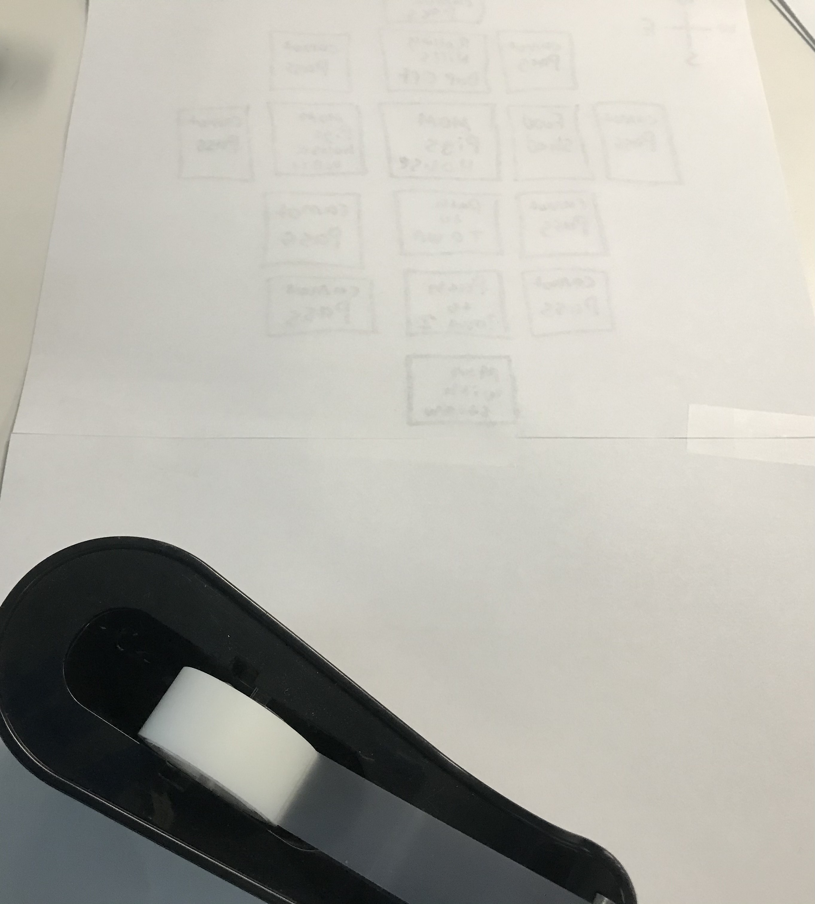
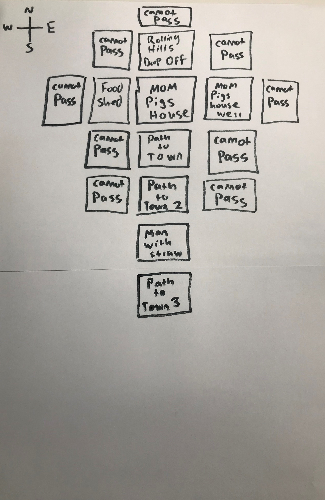

Since The first pig meets a Man with Straw we need to have him on the path somewhere so that the pigs can run into him. To make sure our player is forced to interact with the Man with Straw we need to make the West and East of Path to Town 2 unpassable, while making its South side a box we will call Man with Straw.

As you can see I have used up my piece of paper. Never fear Tape is here! I’m just going to grab another sheet of paper and tape it to my map. Make sure to tape on the back so the strips of tape do not impede your drawing.

So, When the Pigs meet the man we can add some options and some dialogue. For now, we are only focusing on the map so we will cover that option when we start making web pages. In my version of this story after the pigs pass the Man with the Straw the First Pig will want to build his house as soon as possible. So, to the South of Man with Straw draw a box and label it Path to Town 3.
Then to the West of Path to Town 3 draw a box and call it First Pigs House.

Next, we can fill the West and East around Man with Straw, as well as the East of Path to Town 3 with Cannot Pass. This ensures that our player more likely to enter the First Pigs House.

Now the next part of this point, the part with the blowing the house down and eating by the wolf. We will need to wait and cover that in the text of the web pages, as it does not affect the landscape. The house may be blown down, but it’s still in the same spot, and we don’t have to go anywhere new.
We have now finished making our map for this second Key Point of the Story!